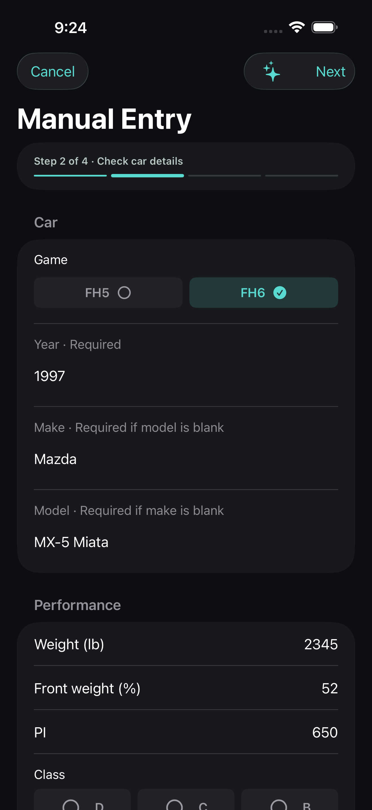
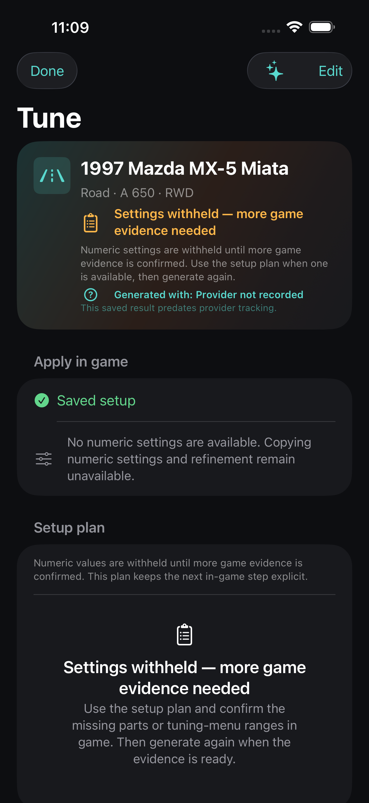

Keep your garage in order
Save setups locally, search cars, styles, and notes, filter by discipline, and sort by car name or recent updates.
SAVE · SEARCH · SORTOFFLINE-FIRSTIPHONEYOUR CAR · YOUR INPUTSUNOFFICIAL
Start with a photo, screenshot, or manual entry. Review your car details, choose a drive style, and save your next setup. FH5 creates local build plans; FH6 numeric settings depend on evidence checks.
THE TUNING RUNBOOK
One guided loop keeps capture, confirmation, generation, and feedback in a predictable order.

ILLUSTRATIVE WORKFLOW PREVIEW
Read your own performance-screen photo or screenshot on device, then check and edit the detected values. Manual entry gives you the same review checkpoint.
ILLUSTRATIVE SETTINGS PREVIEW
ForzAdvisor presents eligible FH6 numeric settings in game-menu order. Experimental guidance must pass capability, range, and evidence checks; unsupported values stay withheld. FH5 produces a local build plan without numeric tune values.

PRODUCT DIRECTION
Bring your own car details. Keep plans organized. Broader numeric tuning coverage depends on genuine observations and review.
Save setups locally, search cars, styles, and notes, filter by discipline, and sort by car name or recent updates.
SAVE · SEARCH · SORTCollect genuine permission-complete observations and pass the documented promotion review before enabling any FH5 numeric ruleset.
EVIDENCE · CONTROLLED TRIALS · REVIEWExtend formula coverage across disciplines and drivetrains, refresh screenshots as the UI changes, and keep physical camera and OCR behavior in the verification loop.
FORMULAS · CAMERA · OCR · ACCESSIBILITYCLEAN-ROOM COMPANION
ForzAdvisor is an unofficial companion built around user-supplied information and independently developed tuning guidance. It is not affiliated with, endorsed by, or sponsored by Microsoft, Xbox, Turn 10 Studios, Playground Games, or the Forza franchise.